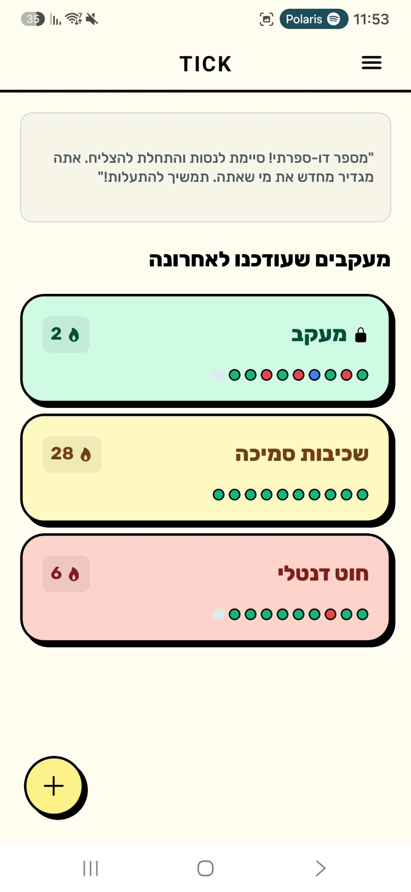

← Back to Portfolio
 TICK
TICK
TICK strips habit tracking to its raw, tactile core. Engineered with bold neo-brutalist aesthetics, zero-latency logging gestures, continuous streaks, and decoupled weekly evaluation for habit reduction.

Traditional trackers assume all habits are additive. When users attempt reduction (e.g. smoking or caffeine), mid-week 'success' alerts create false accomplishments before the cycle ends, while broken streaks induce punishing guilt spirals that drive app abandonment.
TICK decouples accumulation from boundary control. For reduction targets ('at most'), mid-week alerts are suppressed until Sunday's retrospective review, while positive days safely protect momentum without punishing negative scoring.
No fluff, no bloated gamification badges. TICK pairs high-contrast neo-brutalist tactile cards with real-time quick swipes, persistent 10-day history dots, and strict color-coded accountability (Green for success, Red for boundaries broken).
Engineered for 60 FPS feedback, tactical clarity, and zero cognitive load:

Tactile slide-out drawer providing rapid habit selection, tri-state theme toggling (Light/Dark/System), and native RTL/LTR mirroring.
Standard React Native shadow props collapsed into blurry elevation or flat borders on Android. We built a custom layered component (`BrutalistContainer`) using absolute-positioned background views with hard offsets, ensuring pixel-perfect neo-brutalist shadows on both iOS and Android.
Custom PanResponder drag-to-close modal gestures clashed with scroll views and caused keyboard occlusion bugs on physical devices. We scrapped the complex drag gestures in favor of a native ScrollView combined with an explicit, high-contrast 'X' button, restoring instant responsiveness.
Usability audits revealed auxiliary purple failure indicators confused users. We strictly purged purple in favor of a unified semantic scheme: Green for achievement, solid Red for bad days/limits exceeded, and dedicated Freeze Blue (#3B82F6) to represent protected streaks across all themes.